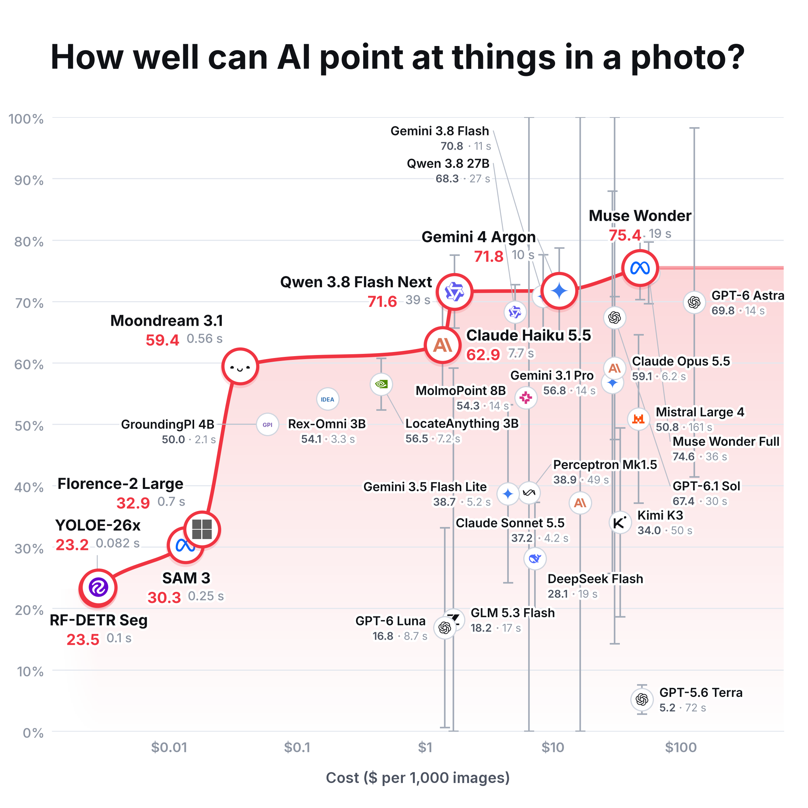

The published v2.7 chart (same scores, same data) with an error bar on every model whose tries differed. What a bar means: how far the score could move if the same photos were asked again (luck between tries). All bars on a chart together hold with 95% confidence: each is a Student-t interval widened for the number of models on the chart (Bonferroni: 29 with specialists, 20 language models only), built from the spread of each task's 3 tries. A bar shorter than its disc is hidden behind it. Bars are cut at 0% and 100%.
No bar: Moondream, MolmoPoint, Rex-Omni, GroundingPI and Florence-2 gave identical answers on every try; SAM 3, YOLOE and RF-DETR were run once (they are deterministic).
Read the long bars carefully. With only 3 tries, one odd try (Perceptron Mk1.5 scored 64 then 0 then 0 on logs; Claude Sonnet 10, 20 then 66 on fig leaves) makes the spread itself very uncertain, and the correction for many models stretches it further. A long bar means "3 tries are not enough to pin this model down", not "this model is anywhere from 0 to 100". More tries would shorten every bar.
Not in the bars: which photos were chosen (only 6 photos, 4 tasks), and each model's prompt having been picked on these same photos (which nudges chosen scores up slightly). The best-value line is drawn through the averages and is not itself tested.
20 language models, each tested on all four tasks.
Source and limits
Drawn by uv run scripts/plot_error_bars.py point-benchmark-v2.7 from the published chart's calls.jsonl; each bar's numbers (standard error, degrees of freedom, t value) are in points.csv and intervals.json. Full method: docs/point-benchmark-v2.md.
Scores measure closeness to approved reference points, not whether a point lies inside the object (masks come later). One thinking level (medium). Language-model seconds include the internet and the provider’s queue; specialist seconds do not. Six photos cannot support broad claims.